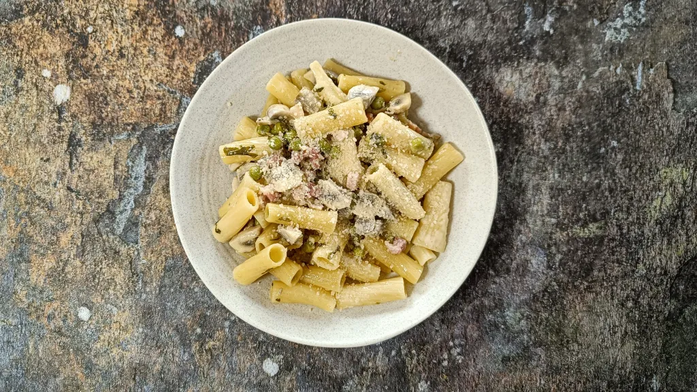

Most recent recipes
Rigatoni alla boscaiola
35 mins
Serves 4

Beef pot-fried rice
40 mins
Serves 4-5
Crispy rosemary and garlic potato galettes with smoked salmon
1 hr
Serves 2
Za’atar, tomato, olive & feta pastries
35 mins
Serves 9
Apple and mustard swineherd’s pie
1 hr
Serves 4
Oaxaca tostadas
15 mins
Serves 2
Paprika chicken
45 mins
Serves 4
Pasta with yoghurt and parsley breadcrumbs
40 mins
Serves 4
Salli boti
3 hr 15 mins
Serves 4-6
Mediterranean style fried rice with anchovy dressing
45 mins
Serves 2